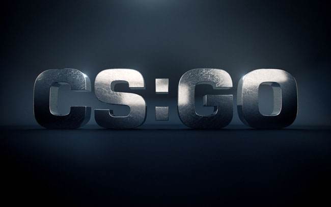
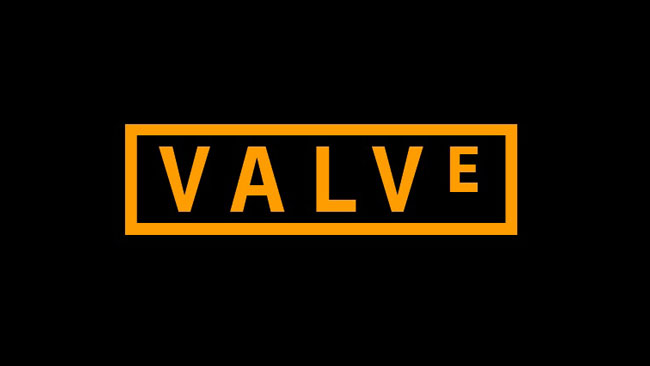
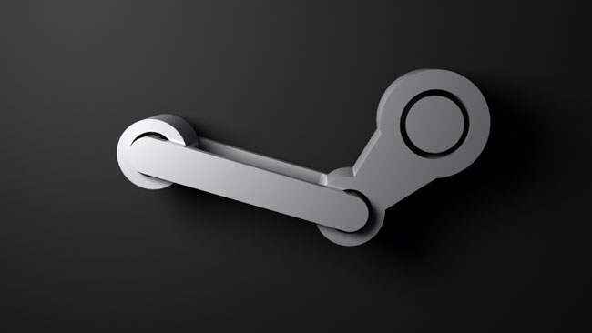

CS GO — от прошлого к настоящему.
26.11.2017
История CS GO.
Начиная разбираться с игрой, просто необходимо посмотреть на её исторические корни. История CS GO неоднократно рассмотрена и обглодана до косточки, однако мы пройдёмся по основным показательным моментам — этого требует серьёзный подход к обучению навыкам игры. Кто не интересуется прошлым, тому невозможно понять настоящее и спрогнозировать будущее (на слэнге CS GO «поймать тайминг»).
Игровой процесс игр серии CS.
18.01.2021

Counter-Strike в переводе с английского обозначает «Контрудар». Игра представляет собой командный шутер от первого лица.
Две команды — террористы и контртеррористы составом по пять игроков противостоят друг другу.
Все действия происходят на ограниченной территории — картах.
Задача террористов — произвести закладку взрывного устройства в районе точки «A» или «B», обозначенных на карте и обеспечить подрыв объекта.
Для этого необходимо определенное время противостоять попыткам антитеррористов обезвредить взрывное устройство.
Чтобы одержать победу, террористы должны взорвать бомбу либо уничтожить контртеррористов.
Контртеррористам необходимо либо обезвредить бомбу либо уничтожить террористов до момента её закладки.
Часть игрового процесса проходится за террористов, другая часть — за контртеррористов.
Counter-Strike 1.6.
26.11.2017

Counter-Strike создана на основе движка Half-Life 1 в 1999 году компанией Valve. Наиболее популярная версия, чемпионаты на основе которой проводятся и сейчас — это версия CS 1.6.
Со стороны наблюдателя-дилетанта, CS GO и CS 1.6 отличаются друг от друга только качеством трёхмерной графики. Даже отдельные карты CS 1.6 в не существенно переработанном виде перешли в CS GO (DUST — DUST2). Если посмотреть со стороны, то мы будем вынуждены с этим согласиться (да простят меня фанаты CS GO).
Counter-Strike: Global Offensive.
26.11.2017
В переводе с английского название игры будет звучать как «Контрудар: глобальное наступление». Игра появилась в августе 2012 года. Как уже говорилось, включила в себя самое лучшее от CS 1.6, добавила ряд усовершенствований и современную графику. Наряду с DOTA 2 является одной из самых популярных киберспортивных игр на территории республик бывшего СССР. Сложно сказать, с чем это связано, может быть с любовью всех русских к автоматам калашникова :).
Steam.
26.11.2017

По адресу steampowered.com располагается интернет-сервис распространения и поддержки компьютерных программ, принадлежащий Valve. Его основное предназначение — получение дохода от реализации и поддержки лицензионного софта. Возможности, реализованные на сайте позволяют загрузить игру, оплатить лицензию, автоматически получать обновления. Через цифровой сервис распространяются десятки тысяч игр, вулючая продукты таких именитых разработчиков как Epic Games, THQ, 2K Games и др. Планируется наряду с программами и играми подключить к Steam видеофильмы и музыкальные произведения. Кибеоспортсмен, присоединившийся к сообществу Steam может участвовать в киберспортивных соревнованиях со строгим учётом, ранжированием, отслеживанием соблюдения правил честной игры. Немаловажной функцией для CS GO является борьба с читерством — использованием программ, позволяющих изменять код запущенной игры, внедряясь в её процесс, в пользу злоумышленника — нечестного игрока (например, увеличивая вероятность попаданий в цель, предоставляя возможность видеть сквозь стены, уклонятся от пуль и т.п.). Современная история CS GO не раздельно связана со Steam. Различные «независимые» сервера, поддерживающие взломанные версии программы не могут обеспечить всех, необходимых для киберспортивной дисциплины условий.